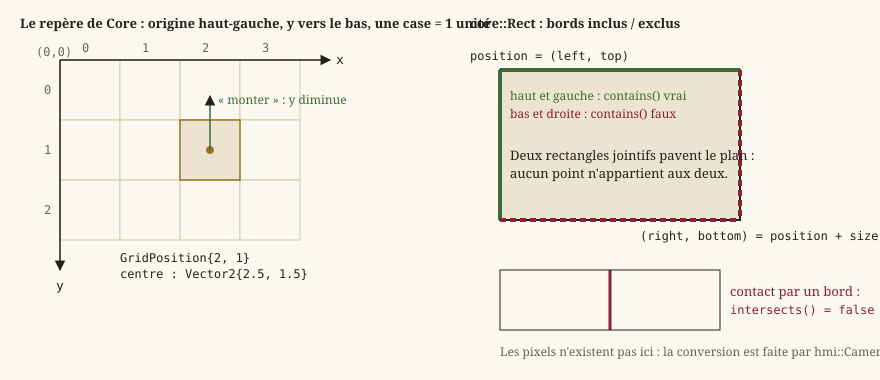

Mathématiques du moteur
Cette page redéfinit, sans présupposer de bagage en algèbre appliquée aux jeux vidéo, les quelques outils mathématiques dont dépend tout le reste du moteur : vecteurs, rectangles alignés aux axes, conventions d'unités, comparaison de nombres flottants, et le générateur de hasard déterministe qui alimente les jets de dés. Tout vit dans Source/Core/Math, quatre en-têtes.
Le moteur n'utilise aucune bibliothèque mathématique tierce dans Core (pas de DirectXMath, pas de GLM) : un type minimal, écrit à la main, suffit aux besoins du jeu et garde Core totalement indépendant de tout backend graphique (EX-ARCH-040) — la conversion vers les types du GPU se fait uniquement côté HMI, au moment du rendu.
core::Vector2 : un point ou une direction dans le monde
Un vecteur 2D est simplement une paire de nombres (x, y). Il sert à deux usages différents selon le contexte, qu'il faut garder à l'esprit en lisant le code :
- comme position : « où se trouve cette entité dans le monde ? » (
core::Transform::position) ; - comme direction : « dans quel sens le joueur veut-il aller ? » (
core::ExplorationIntent::move), qu'une vitesse en unités monde par seconde transforme en déplacement.
core::Vector2 porte deux float, x et y (nuls par défaut), un constructeur à deux composantes, et fournit l'algèbre nécessaire :
- addition/soustraction (
+,-, et les formes composées+=,-=) : combiner deux positions ou deux déplacements composante par composante — additionner une position et une vitesse × temps donne la nouvelle position ; - produit par un scalaire (
*,/,*=,/=; le scalaire se place à gauche ou à droite) : allonger ou raccourcir un vecteur sans changer sa direction (multiplier une direction par une vitesse scalaire donne un vecteur vitesse) ; - opposé (unaire
-) : inverser un sens (-vva exactement à l'opposé dev) ; - produit scalaire (dot product ⧉,
core::Vector2::dot) :a.dot(b) = a.x*b.x + a.y*b.y. Géométriquement, ce nombre unique résume la relation entre deux directions : positif si elles pointent globalement dans le même sens, négatif si elles s'opposent, nul si elles sont perpendiculaires. C'est l'opération fondamentale des calculs d'angle et de projection — l'éditeur s'en sert pour mesurer la distance d'un clic à un lien du graphe du monde (Editor/Logic/WorldGraphLayout.cpp) ; - longueur (
core::Vector2::length, norme euclidienne ⧉) : la distance entre l'origine et le point(x, y), calculée par le théorème de Pythagore :sqrt(x*x + y*y); - normalisation (
core::Vector2::normalized) : produit un vecteur de même direction mais de longueur exactement 1 (un « vecteur unitaire »), en divisant chaque composante par la longueur. Utile pour obtenir une direction pure, indépendante de la distance — par exemple normaliser l'intention de déplacement (core::ExplorationIntent::move, de longueur au plus 1) garantit qu'une diagonale ne va pas plus vite qu'un mouvement cardinal, alors que(1, 1)non normalisé a une longueur de√2 ≈ 1,41, soit 41 % plus rapide qu'attendu sans cette étape. Cas particulier : normaliser le vecteur nul (longueur quasi nulle) n'a pas de direction définie —normalized()renvoie alors le vecteur nul plutôt que de diviser par zéro.
core::Vector2::lengthSquared : éviter la racine carrée
lengthSquared() renvoie x*x + y*y, sans appeler sqrt. La racine carrée est une opération relativement coûteuse comparée à une multiplication ; or, pour de nombreuses questions, on n'a pas besoin de la longueur exacte, seulement de comparer deux longueurs (« ce vecteur est-il plus long que celui-là ? », « cette distance est-elle inférieure à un seuil ? »). Comme la fonction racine carrée est croissante, comparer a.lengthSquared() < b.lengthSquared() donne exactement le même résultat que comparer a.length() < b.length(), sans jamais calculer de racine — une optimisation classique et systématique en géométrie appliquée aux jeux.
Égalité approchée
operator== sur deux Vector2 (comme core::approximatelyEqual sur deux float, voir plus bas) compare avec une tolérance, pas une égalité binaire exacte ; operator!= en est la négation. C'est nécessaire parce que l'arithmétique flottante accumule de minuscules erreurs d'arrondi : deux calculs mathématiquement équivalents (par exemple (a + b) + c et a + (b + c)) peuvent produire des float légèrement différents au dernier bit. Comparer de tels résultats avec == strict échouerait de façon imprévisible et intermittente — un piège classique documenté plus bas.
Attention — Une égalité à tolérance n'est pas transitive :
a == betb == cn'impliquent pasa == c. UnVector2ne doit donc jamais servir de clé d'un conteneur ordonné ou haché. Pour désigner une case, le moteur emploiecore::GridPosition, en entiers.
core::Rect : le rectangle aligné aux axes
Une AABB ⧉ (Axis-Aligned Bounding Box, « boîte englobante alignée aux axes ») est la forme géométrique la plus simple pour représenter une zone : un rectangle dont les côtés sont toujours parallèles aux axes X et Y — jamais tourné. C'est un compromis délibéré : une forme tournée ou complexe (cercle, polygone) serait bien plus chère à tester, pour un gain inutile dans un monde fait de grilles de tuiles alignées aux axes.
core::Rect décrit un tel rectangle par son coin haut-gauche (position) et sa taille (size, dimensions attendues positives ou nulles — rien ne le vérifie, c'est une précondition) ; le constructeur Rect(topLeft, dimensions) les prend dans cet ordre, et core::Rect::left, core::Rect::right, core::Rect::top, core::Rect::bottom en donnent les bords (right = left + largeur, bottom = top + hauteur).
{kind=link}

Deux tests suffisent aux usages du moteur — la zone visible de la caméra (hmi::Camera2D::visibleBounds), l'emprise d'une tuile projetée (core::IsoProjection) :
core::Rect::contains(point)est inclusif en haut/à gauche et exclusif en bas/à droite, pour qu'une grille de rectangles jointifs pave le plan sans recouvrement ni trou : un point posé exactement sur la frontière entre deux cases appartient à une seule d'entre elles ;core::Rect::intersects(other)exige une aire commune strictement positive : deux rectangles qui se touchent seulement par un bord ne se recouvrent pas. Le test est le classique « séparation par un axe » : il n'y a pas d'intersection si l'un est entièrement à gauche, à droite, au-dessus ou au-dessous de l'autre.
Conventions d'unités et de repère
Trois conventions, fixées une fois pour toutes et valables dans tout Core, expliquent la plupart des signes rencontrés dans le code de déplacement et de niveau :
- Une tuile = une unité monde. Les positions, tailles et vitesses sont exprimées en « unités monde » (ou « unités par seconde » pour les vitesses), jamais en pixels à l'intérieur de
Core. Une entité large de1.0occupe exactement une case de la grille de niveau. La conversion vers les pixels affichés à l'écran n'a lieu qu'au moment du rendu, côtéHMI— c'esthmi::Camera2D::PIXELS_PER_UNIT, multiplié par le zoom, qui la fixe (Rendu 2D : de la scène à l'écran).Coren'a aucune idée de la résolution de la fenêtre ni du zoom de la caméra, ce qui le garde testable sans ouvrir de fenêtre. - Origine en haut-gauche,
yvers le bas (EX-ARCH-020) — la convention standard de l'affichage écran (héritée du sens de balayage d'un moniteur, ligne du haut en premier), à l'opposé de la convention mathématique habituelle oùymonte. Conséquence directe et contre-intuitive pour qui découvre ce domaine : « monter » (aller vers le nord de la carte) correspond à une coordonnéeyqui diminue — s'y référer dès qu'un signe surprend. La grille d'une carte suit le même repère en entiers :core::GridPosition{column, row}, colonne vers la droite, ligne vers le bas (Niveaux : modèle, couches, entités, chargement). - Angles en radians, pas en degrés (
core::Transform::rotation) — la convention native des fonctions trigonométriques du C++ standard (std::sin,std::cos, …), qui évite une conversion à chaque appel.
Garder ces trois conventions en tête suffit à expliquer, sans avoir à les redériver, la quasi- totalité des signes et des sens de déplacement rencontrés dans le moteur.
Comparaison flottante : pourquoi l'égalité stricte est dangereuse
Les nombres à virgule flottante (float) ne représentent pas exactement toutes les valeurs réelles : ils utilisent une précision finie, et des opérations en apparence anodines (addition répétée, division) introduisent de minuscules erreurs d'arrondi. Un exemple classique : en C++, 0.1f + 0.2f == 0.3f est faux, car ni 0.1, ni 0.2, ni 0.3 ne sont représentables exactement en binaire — le résultat de l'addition diffère de 0.3f de quelques millionièmes. Comparer deux flottants issus de calculs différents (même mathématiquement équivalents) avec == strict est donc fragile : le test peut échouer de façon imprévisible selon l'ordre des opérations, l'optimiseur du compilateur, ou l'architecture du processeur.
core::approximatelyEqual(lhs, rhs, tolerance) (Core/Math/MathUtils.h) résout ce problème en comparant deux float à une tolérance près, à la fois relative et absolue :
|lhs − rhs| ≤ tolerance × max(1, |lhs|, |rhs|)Pour des valeurs de magnitude inférieure à 1, la tolérance est absolue (tolerance tel quel : un plancher, utile près de zéro, où une tolérance purement relative deviendrait nulle) ; au-delà, elle est relative (proportionnelle au plus grand opérande : deux positions à 1000.0 qui diffèrent de 0.001 sont égales, ce qu'une tolérance absolue de 1e-5 refuserait). La tolérance par défaut est core::EPSILON, 1e-5, adaptée à des coordonnées en unités monde — une case vaut 1, et un cent-millième de case n'a aucun sens physique. C'est la fonction que Vector2::operator== appelle composante par composante, et celle que les tests du moteur utilisent systématiquement pour comparer des résultats de calcul flottant plutôt qu'un == direct.
Le hasard déterministe : core::DeterministicRandom
Un jeu de rôle tire des dés en permanence : jet d'attaque, dégâts, initiative, jet de compétence. Mais un tirage qui lirait l'horloge système ou std::random_device rendrait la partie irreproductible : un test qui rejoue un combat n'obtiendrait jamais le même résultat, et un bug observé une fois ne se reproduirait pas. Le moteur exige donc que toute source de hasard soit un générateur à graine explicite (EX-NFR-002) : même graine, même suite de valeurs, sur toute machine. Core/Math/DeterministicRandom.h en fournit un, sans dépendance à <random> — dont les distributions ne sont pas garanties identiques d'une bibliothèque standard à l'autre.
core::splitMix64 et core::deriveSeed : fabriquer des graines
core::splitMix64(value) est une fonction pure de mélange (SplitMix64 ⧉) : elle transforme un entier 64 bits en un autre, bien distribué, par trois étapes de décalage-xor-multiplication. Deux valeurs voisines (1 et 2) donnent des résultats sans rapport apparent — c'est ce qu'on attend d'une graine. Elle est constexpr : une graine peut se calculer à la compilation.
core::deriveSeed(baseSeed, step, entityId) combine une graine de base, un numéro de pas et un identifiant reproductible (l'index d'une entité, par exemple) en une graine propre à ce triplet, en enchaînant trois splitMix64 avec un xor entre chaque. L'intérêt est de ne dépendre d'aucun compteur partagé : deux tirages faits pour le même triplet donnent la même graine, quel que soit l'ordre ou le nombre d'appels intercalés — là où un générateur unique consommé par tout le monde ferait dépendre le résultat d'un tirage de tout ce qui a tiré avant lui.
La suite de valeurs
core::DeterministicRandom se construit avec une graine (explicit, jamais par défaut : on ne peut pas oublier de la donner) et avance son état interne d'une constante à chaque tirage, en passant l'état par splitMix64 :
| Fonction | Renvoie | Détail |
|---|---|---|
core::DeterministicRandom::nextUInt32 | Le prochain entier 32 bits de la suite. | Les 32 bits hauts du mélange : les meilleurs. |
core::DeterministicRandom::nextFloat01 | Un float dans [0, 1[. | nextUInt32() / 2³² ; 1 exclu. |
core::DeterministicRandom::nextRange(min, max) | Un float dans [min, max]. | min + nextFloat01() × (max − min) ; max == min rend min sans discriminer. |
core::DeterministicRandom::nextInt(min, max) | Un entier dans [min, max], bornes comprises, sans biais. | Ci-dessous. max <= min rend min sans tirer : un intervalle vide est une valeur fixe, pas une erreur. |
nextInt : pourquoi pas un modulo
La forme évidente d'un dé, nextUInt32() % 20 + 1, est fausse : 2³² n'est pas un multiple de 20, si bien que les 2³² mod 20 premières valeurs sortent une fois de plus que les autres. Sur un d20 le biais est d'environ un dix-millionième — négligeable en jeu —, mais il est systématique, va toujours dans le même sens, et rendrait indéfendable toute mesure de distribution faite sur ce générateur (par exemple pour vérifier une règle sur mille tirages). La méthode retenue est celle du rejet : on calcule le nombre de valeurs « en trop » (2³² mod étendue), on rejette les tirages qui tombent dans cette queue, et on recommence. Le nombre d'itérations est fini avec probabilité 1 et sa moyenne est inférieure à 2 pour toute étendue réaliste.
Le détail qui compte : la queue rejetée est la queue basse, [0, reste[, et non la haute. Rejeter « au-delà du dernier multiple complet » se lit mieux, mais ce seuil vaut 2³² quand l'étendue divise 2³² — et 2³² ne tient pas dans un std::uint32_t : il retombe à 0, la condition devient toujours vraie, la boucle ne se termine jamais. Le défaut ne se voit que sur les puissances de deux : un d6 et un d20 passent, un d8 bloque. C'est un test de rejouabilité sur 3d8 qui l'a trouvé, pas une relecture — la raison pour laquelle le générateur a une suite de tests de distribution et non seulement un test de reproductibilité.
Qui tire les dés
Le générateur ne sait rien des dés ; ce sont les règles qui l'appellent, toujours en le recevant en paramètre — jamais un générateur global : core::rollCheck (jets de compétence), core::rollAttack et les dégâts (Règles d20 et personnages, Combat tactique), et core::Arena pour l'initiative. Le passer en paramètre est ce qui rend un combat rejouable : un test construit un DeterministicRandom{42}, joue, et compare à un résultat connu.
Voir aussi
core::Vector2,core::Rect,core::approximatelyEqual,core::EPSILON.core::DeterministicRandom,core::splitMix64,core::deriveSeed.- ECS : entités, composants, systèmes —
Transform, le composant qui porte ces types. - Rendu 2D : de la scène à l'écran — la conversion des unités monde en pixels.
- Boucle de jeu et pas de temps fixe — l'autre condition du déterminisme : le pas fixe.
exigences-non-fonctionnelles.md—EX-NFR-002, le déterminisme exigé.